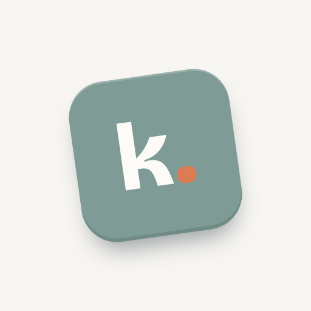

Kachunk is a quiet paper room where satisfying 3D toy bricks live. The chrome whispers so the blocks can be the whole show. Everything below is founder-approved law (design passes 1–6, final sign-off 2026-07-17).

The mark: one off-kilter block (−8°), neutral aqua #7E9B95, lowercase Bricolage "k" in paper white, terracotta period #DD7C54. The period is the block landing. No bucket, no motion ticks, no illustration.
Bricolage Grotesque ExtraBold, tight tracking, always with the terracotta full stop. Lowercase "kachunk" is allowed in running copy as a verb ("kachunk it").
Clear space = the height of the "K" on all sides. Minimum size 90px wide (digital). The dot is always terracotta — it never inherits surrounding text color.
Known weakness: a single-letter mark is legally weak on its own. The word "Kachunk" carries the trademark; the block mark is trade dress. Screen both before spend (see Purchase List, gate G-1).
Warm paper, slate-blue ink (never near-black). Terracotta is the only accent — primary buttons, the wordmark dot, selection hairlines at rgba(221,124,84,.45), the sweep pop. Aqua exists only as the mark block. Honey is reserved for small warm moments (brick-size dots, fab). Green only for success. No red anywhere — misses are dashed outlines, never alarms.
Order matters: Gentle Mist (the blue) is always first — it's the default for the first bucket. Low-saturation, warm-leaning set; dopamine comes from the physical blocks, not loud hue. Users may also set any custom hex; edge/light shades derive automatically (−34% / +30%). Blocks always carry fill + derived darker edge + line icon — color is never the only signal (WCAG 1.4.1 / W3C COGA).
The block pastels fail colorblind-separation as data-series colors, so charts use this deeper machine-validated set. Fixed assignment order c1→c6, never cycled.
| Role | Face | Rules |
|---|---|---|
| Display / wordmark | Bricolage Grotesque | 600–800. Tight (−0.015em). The ink traps are the brand's character — never stretch, outline, or substitute it. |
| UI / body | Inclusive Sans | Accessibility-designed (non-mirrored forms, wide counters). 16px minimum body, 1.5 line-height, max two weights per screen. |
| Numbers / stats | Figtree | Counts, dates, kickers, tabular numerals. Big stat numbers at weight 300 — dramatic hierarchy comes from size + lightness, not boldness. Never for body copy. |
The founder-locked reference is the Settings page (modeled on Google Clock): quiet, low-contrast, airy, hairlines over card backgrounds. Every non-board screen copies it exactly.
| Element | Law |
|---|---|
| Cards | Borderless inset cards (#F1EEE7) or white cards with 1px hairlines. Flat — no drop shadows, no offset shadows, anywhere in chrome. |
| Section labels | Small, muted, sentence case, generous top margin. Hierarchy through space and size, not weight or color. |
| Selection | Faint terracotta hairline rgba(221,124,84,.45) on the selected card. Never an ink/dark active state, never a fill change. |
| Block colors in lists | Always on a paper/white card, never on a color-washed row. |
| Onboarding | The exception: full-color immersive screens (terracotta pick, per-bucket fill colors, ink recap with tinted rows). The contrast rule inverts — light text, translucent hairlines. |
| Toasts | Top of screen, errors/system only. Celebration is confetti + sound, never a message box. |
True WebGL bricks: rounded-box geometry, clearcoat physical material (subtle sheen, no bubble gloss), lit by one warm key + soft fill. Icon decals front and back. Bigger slot-size = physically bigger brick (×1 to ×1.66). They read as objects you could pick up — because you can.
Blocks tumble in 3D when tossed, then right themselves as they settle — the fidget-spinner soul of the app. Shake the device and the pile rattles. The one ceremony: capture — confetti burst in block colors + terracotta + honey, synth chime. All chrome motion is slow and purposeful; nothing loops, nothing begs. Respects prefers-reduced-motion.
| Event | Sound | Visual |
|---|---|---|
| Any tap | Soft tick | — |
| Block toss | Boing | 3D tumble |
| Block into bucket | Success chime ("kachunk") | 34-piece confetti |
| Drag slide | Slide whoosh | — |
| All blocks home | Fanfare | Big confetti |
All synthesized WebAudio — no audio files. Global mute lives in Settings → Sounds. Celebration is always sound + physics + confetti; never a modal, never a badge.
| Voice | Dial | Sample | Use |
|---|---|---|---|
| Plain | NO FROSTING | "Block recorded. 2 remaining this week." | Low-stim option; also legal/support copy. |
| Zesty | DEFAULT | "KACHUNK. That's the sound of you actually doing the thing." | All marketing, store listings, socials. |
| Extra Spicy | ROAST ME | "Oh look who finally did a thing. The bucket nearly forgot you." | Opt-in only. Never in marketing. |
| Sugar Rush | MAX POMPOMS | "YESSS! Another block in the bucket!! You're UNSTOPPABLE!!" | Opt-in only. |
Lucide line icons (ISC license), 24×24 grid, 1.2px stroke in-app, rounded caps and joins, no fills, no complex illustration. The in-app library is 100 icons; new ones must match stroke weight and corner language. Emoji never appear in UI chrome — only in user-generated text.
| # | Never | Because |
|---|---|---|
| 1 | Orange/black or any black-on-hot-color scheme | Documented ND stressor; reads "warning label." (Founder veto, day one.) |
| 2 | Red for misses, broken-streak imagery, guilt copy, auto-resets | Punishment mechanics are the category's #1 churn driver. |
| 3 | Looping/autoplaying animation, attention-begging badges, more than one daily notification | Top overwhelm triggers (W3C COGA, sensory research). |
| 4 | CDN fonts, drop shadows in chrome, card backgrounds where a hairline would do | The brand is quiet paper + bundled type; both failures happened in build and both got caught by the founder, not the tooling. |
| 5 | Meaning by color alone, or color-washed rows behind block colors | COGA violation; block colors live on paper cards, always with icon + label. |